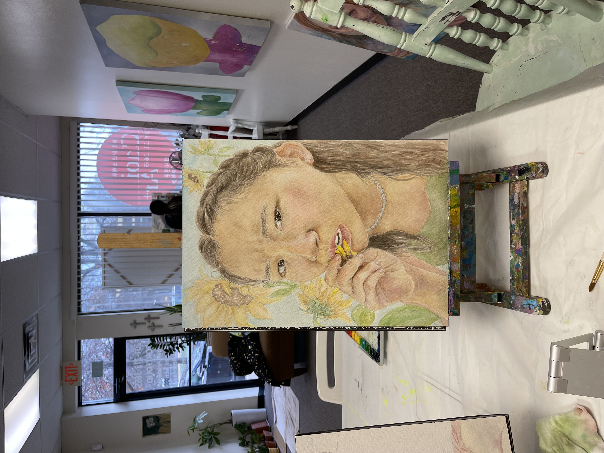
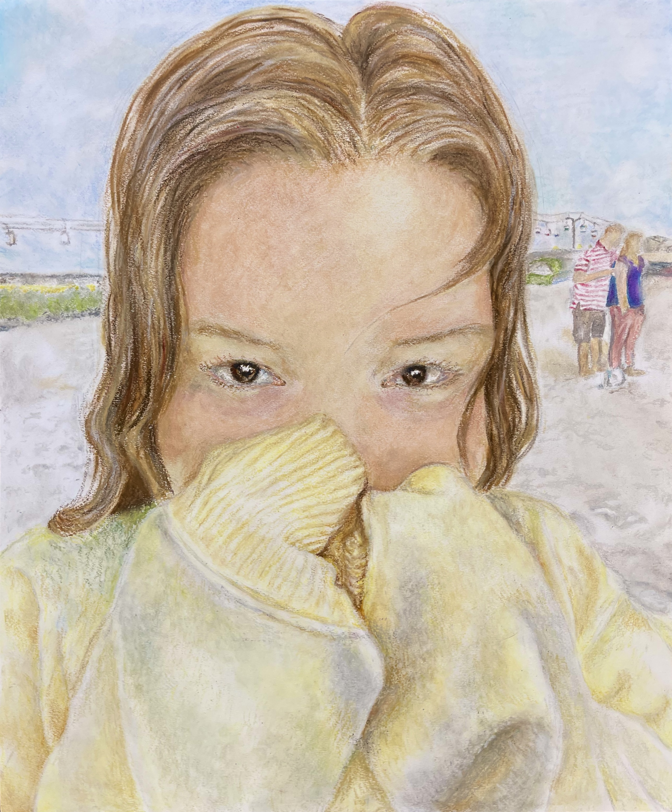
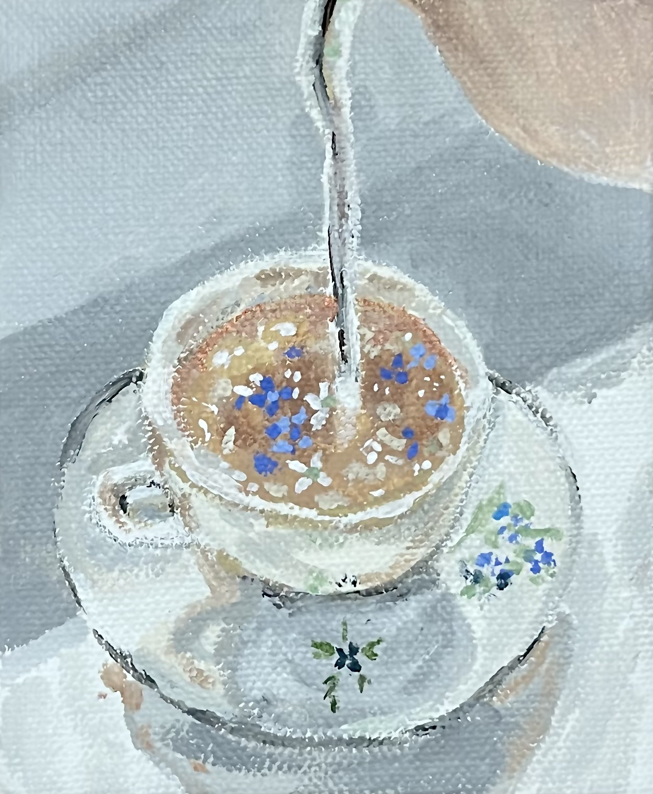
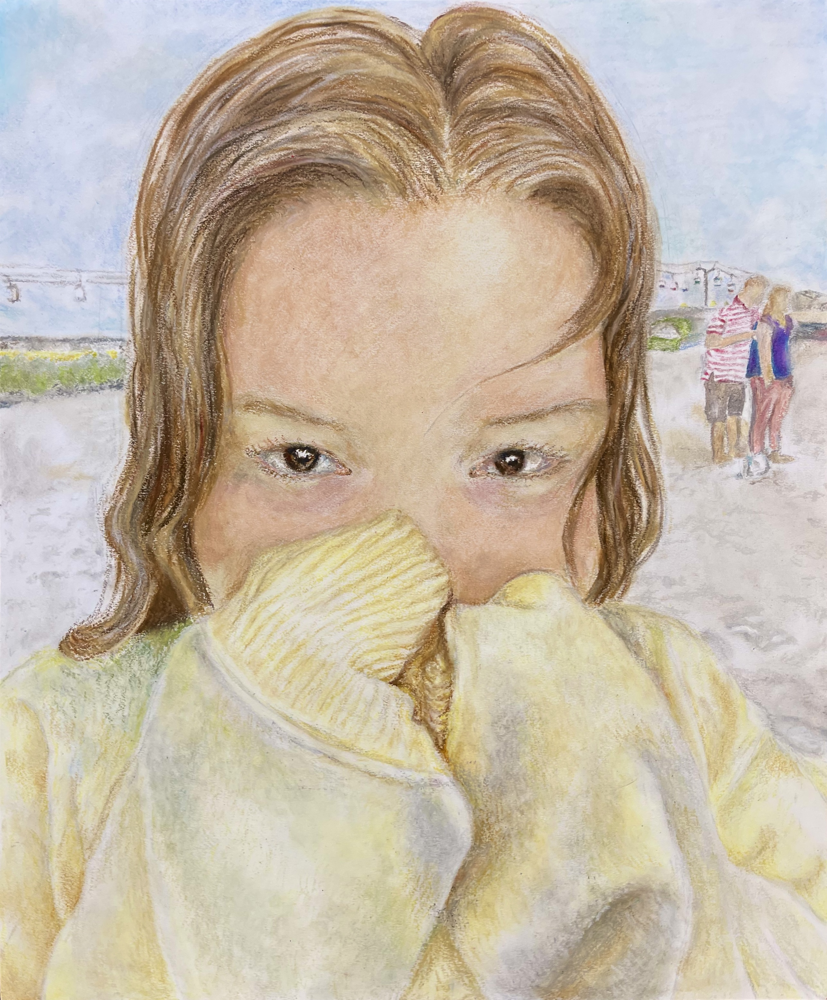
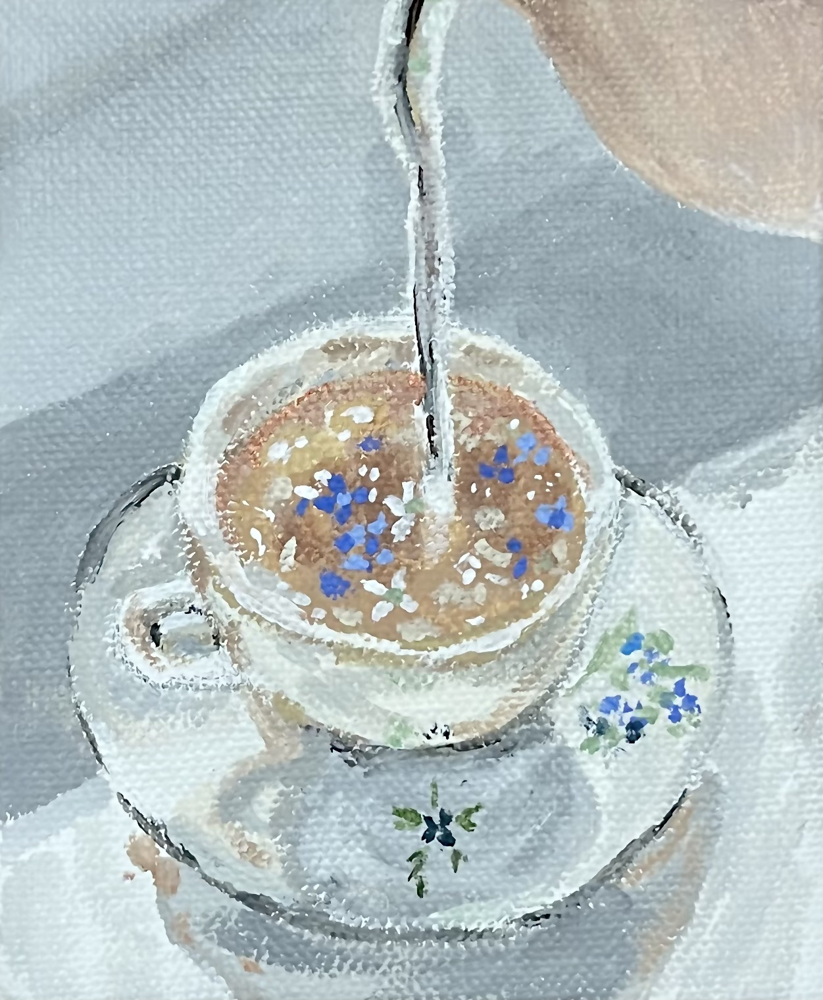

All About Art
One of my favorite things to do is draw!
I've always liked drawing even when I was younger. Art is not only fun but also a really good way to relieve stress. So, I draw in my free time!
Some Recent Drawings

 



- I drew my friend Olivia! (She also takes Let's build a Webpage)
- These are some sketches I did a while ago, I actually used the sketches of the oranges for my BCA portfolio.
- I used oil-pastel in order to draw my friend Anezka.
- This was a painting I did for fun on a snow day.
- A really helpful site I use in order to get inspiration sometimes for my art is pinterest! You should definitely check it out if you have never used it before.
- Go to Pinterest
Go back to the first page!